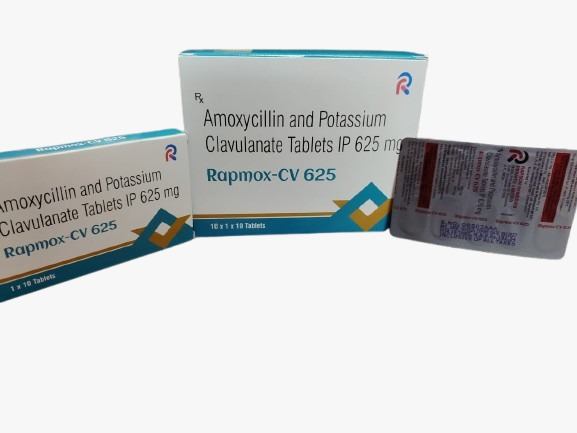

A Real Savior in Critical Situations. Rescue your patient from risky situations.
Rapmox CV-625 is a powerful antibacterial combination designed to overcome antibiotic resistance. Amoxicillin works by attacking the cell walls of bacteria to destroy them. However, many bacteria produce an enzyme called beta-lactamase that can deactivate Amoxicillin. Clavulanic Acid serves as a "shield" by inhibiting these enzymes, allowing Amoxicillin to effectively clear the infection.
Specifically formulated to kill bacteria that have developed resistance to standard penicillins by inhibiting beta-lactamase.
Offers significantly better absorption in the body compared to many other types of penicillin-based antibiotics.
Proven highly active against tough pathogens like Staphylococci, E. coli, and Klebsiella Pneumoniae.
Provides a wide therapeutic window covering both Gram-positive and Gram-negative bacterial strains.
Offers wide coverage against Gram +ve and Gram -ve pathogens with superior tissue penetration.
Prevents the degeneration of Amoxicillin by permanently binding to bacterial beta-lactamase enzymes.